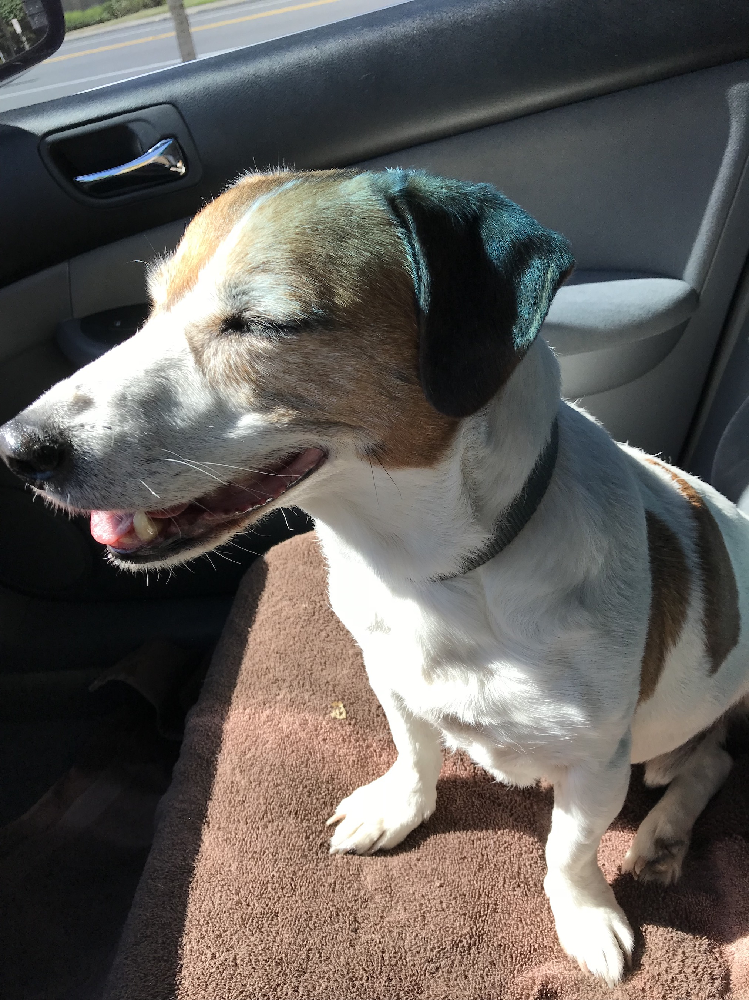

<mat-toolbar #nav class="op-navigation">
	<h1 routerLink="/" routerLinkActive="active">Operation Turkey Meats</h1>
	<div *ngIf="!isMobile" class="op-navigation__options">
		<span routerLink="/donate" routerLinkActive="active">Donate</span>
		<span routerLink="/about" routerLinkActive="active">About</span>
	</div>
	<mat-icon *ngIf="isMobile" svgIcon="menu" aria-hidden="false" aria-label="menu" (click)="drawer.toggle()"></mat-icon>

</mat-toolbar>
<mat-drawer-container class="example-container" autosize>
	<div class="banner_images">
		
		
		
	</div>
	<mat-drawer #drawer class="example-sidenav" mode="over">
	  <p>Auto-resizing sidenav</p>
	</mat-drawer>
	<div class="content-body">
		<p class="mat-display-1">Make a Difference to those that need it</p>
		<router-outlet></router-outlet>
	</div>
</mat-drawer-container>